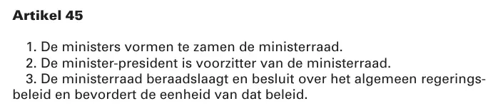

Beweisstück · Verfassung
Verfassung, Artikel 45 über die Einheitlichkeit der Regierungspolitik, Text vom 14. März 2023
Die Passage
„1. Die Minister bilden gemeinsam den Ministerrat. 2. Der Ministerpräsident ist Vorsitzender des Ministerrats. 3. Der Ministerrat berät und beschließt über die allgemeine Regierungspolitik und fördert die Einheitlichkeit dieser Politik.“ Seite 9, unter der Überschrift „Artikel 45“, in Kapitel 2 (Regierung), § 2 (König und Minister). Die drei Absätze stehen im Staatsblad jeweils auf einer eigenen Zeile und sind hier zusammengezogen. Der deutsche Wortlaut ist die amtliche Übersetzung des Ministeriums für Inneres und Königreichsbeziehungen (Die Verfassung des Königreichs der Niederlande 2023); der niederländische Text steht unten.
Originaltext
“1. De ministers vormen te zamen de ministerraad. 2. De minister-president is voorzitter van de ministerraad. 3. De ministerraad beraadslaagt en besluit over het algemeen regeringsbeleid en bevordert de eenheid van dat beleid.” Der niederländische Text, wie er im Staatsblad steht; das Wort „regeringsbeleid“ ist dort über zwei Zeilen getrennt.

Warum dieses Dokument wichtig ist
Artikel 45 der niederländischen Verfassung bestimmt, dass die Minister gemeinsam den Ministerrat bilden und dass dieser über die allgemeine Regierungspolitik berät und beschließt und die Einheitlichkeit dieser Politik fördert. Die Bestimmung steht seit der Verfassungsrevision von 1983 in der Verfassung; die Geschäftsordnung des Ministerrats wiederholt sie in Artikel 4 und fügt in Artikel 12 Absatz 2 hinzu, dass ein Minister oder Staatssekretär in keinem Fall gegen einen Beschluss des Rates handelt. Der Essay stellt diesen verfassungsrechtlichen Auftrag neben zwei Äußerungen von Mitgliedern desselben Kabinetts über dasselbe Buch: Der Minister für Justiz und Sicherheit schrieb im Januar 2021, die Etiketten Fake News, Verschwörungstheorie und regierungsfeindliche Propaganda „beruhen keineswegs“ auf dem Inhalt des Buches, während die Verteidigungsministerin das Buch im August 2018 als eines abgetan hatte, in dem sich Fakten und Fiktion vermischen. Der Artikel schreibt nicht vor, was Minister von einem Buch zu halten haben, aber er macht die Einheitlichkeit der Regierungspolitik zum verfassungsrechtlichen Auftrag, und daran misst der Essay die mangelnde Einheitlichkeit.
Herkunft
- Dokument
- Königlicher Erlass vom 14. März 2023 zur Bekanntmachung des Textes der revidierten Verfassung, mit diesem Text als Anlage, 26 Seiten
- Fundstelle
- Staatsblad van het Koninkrijk der Nederlanden (Gesetzblatt), Jahrgang 2023, Nr. 105
- Rechtsgrundlage
- Artikel 141 der Verfassung, auf Vorschlag der Ministerin für Inneres und Königreichsbeziehungen vom 9. März 2023, Geschäftszeichen 2023-0000096060
- Unterzeichnet
- Willem-Alexander und die Ministerin für Inneres und Königreichsbeziehungen H.G.J. Bruins Slot, Den Haag, 14. März 2023
- Ausgegeben
- 3. April 2023, durch die Ministerin für Justiz und Sicherheit D. Yeşilgöz-Zegerius
- Textstand
- In der Fassung nach den Gesetzen vom 6. Juli 2022 (Stb. 2022, 316 und 331–335) und dem Gesetz vom 10. Februar 2023 (Stb. 2023, 62), laut Vorspann der Anlage
- Artikel
- Artikel 45 steht auf Seite 9, in Kapitel 2 (Regierung), § 2 (König und Minister), zwischen Artikel 44 über die Ministerien und Artikel 46 über die Staatssekretäre
- Geschäftsordnung
- Artikel 4 Absatz 1 der Geschäftsordnung des Ministerrats wiederholt den dritten Absatz; Artikel 12 Absatz 2 bestimmt, dass ein Minister oder Staatssekretär in keinem Fall gegen einen Beschluss des Rates handelt (wetten.overheid.nl/BWBR0006501)
- Übersetzungen
- Amtliche Übersetzungen ins Englische, Deutsche und Französische, Ministerium für Inneres und Königreichsbeziehungen, Ausgabe 2023 (26. April 2023), rijksoverheid.
nl/ documenten/ 2023/ 04/ 26/ grondwet-voor-het-koninkrijk-der-nederlanden - Aufbewahrt bei
- Officiële bekendmakingen (amtliche Bekanntmachungen), Overheid.nl
- Webadresse
- zoek.
officielebekendmakingen. (PDF der Staatsblad-Ausgabe)nl/ stb-2023-105.pdf - Siehe auch
- Justizminister an Giltay, 12. Januar 2021Novini, Defensie flatert voort, 25. August 2018
Zitiert in: dem Essay „Das Verbot fiel, das Buch hielt stand“ im Kapitel (2) „Die Regierung widerspricht sich selbst“.
Beweiskarte: https://
Dokument: https://
Abgerufen am 3. Oktober 2026.

Diese Seite ist ein Beweisstück zum Buch Der Cover-up-General von Edwin Giltay und zur dazugehörigen Website.